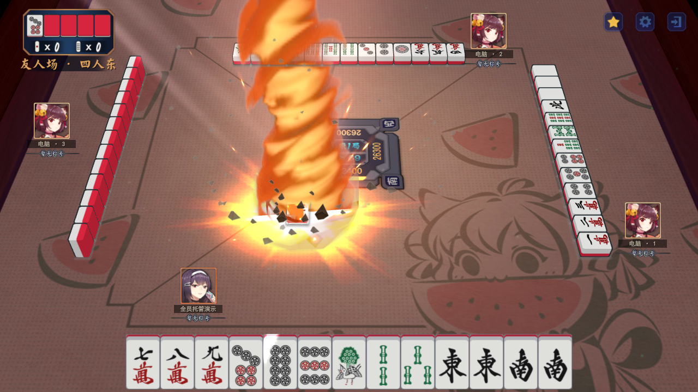
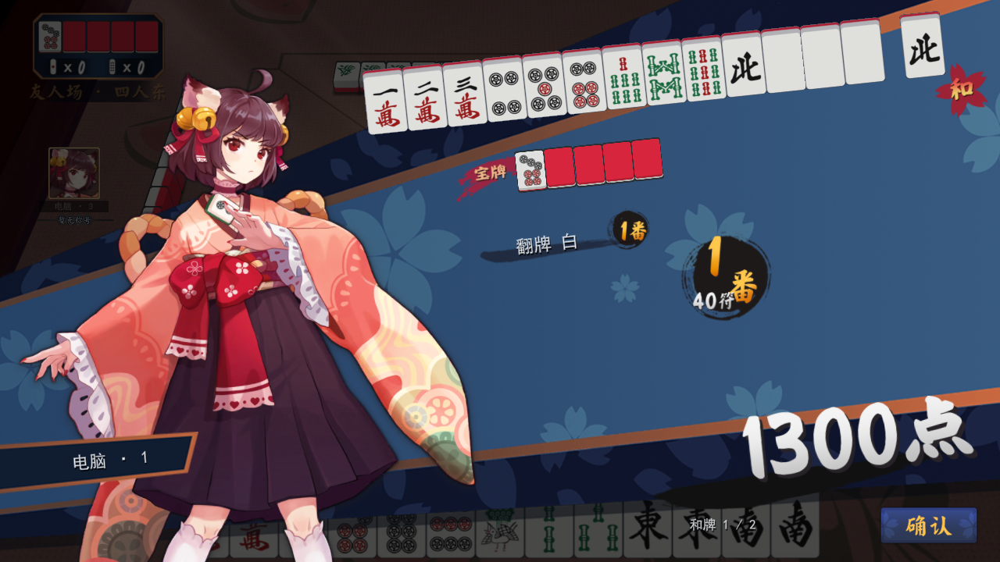
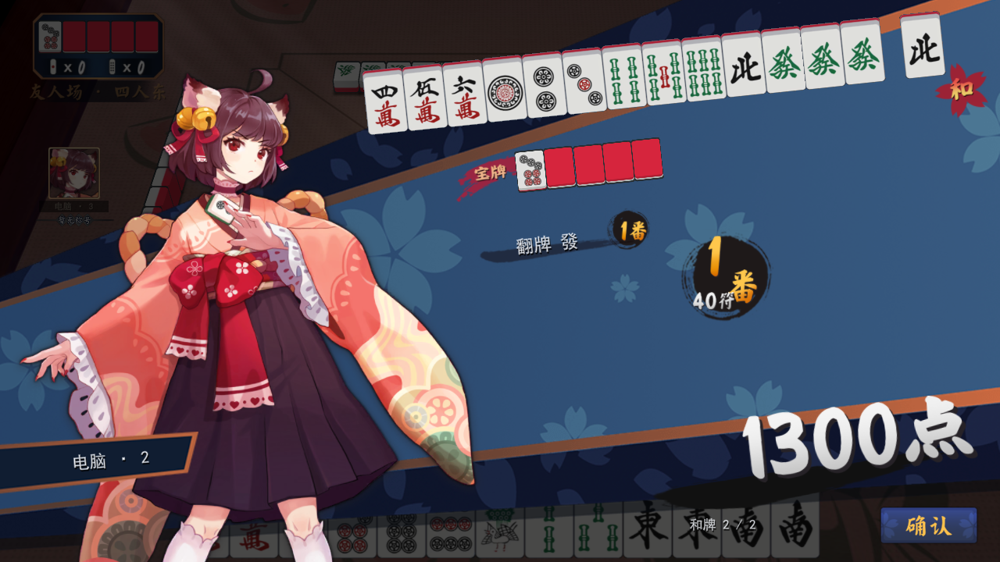
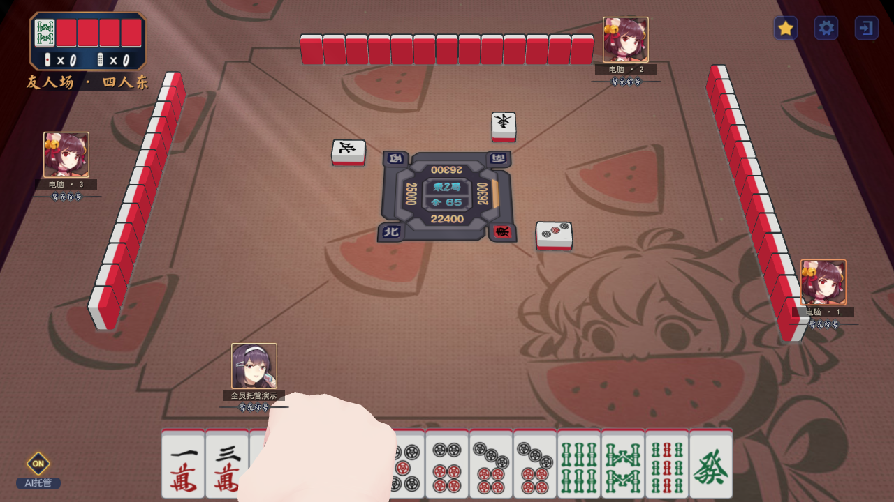
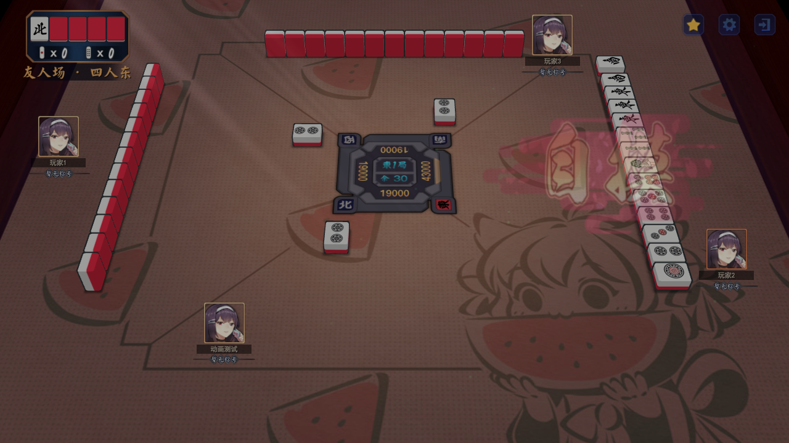
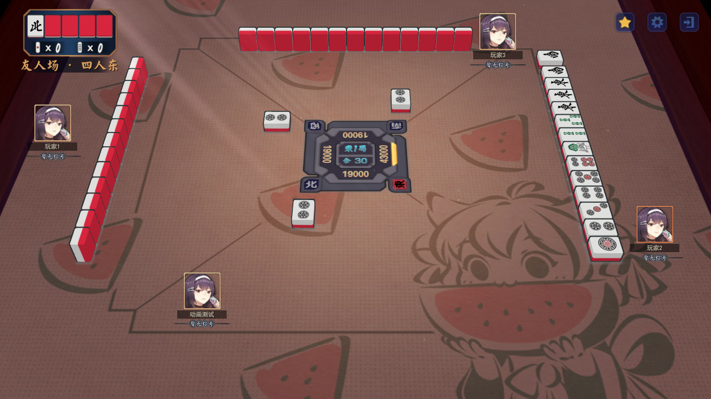
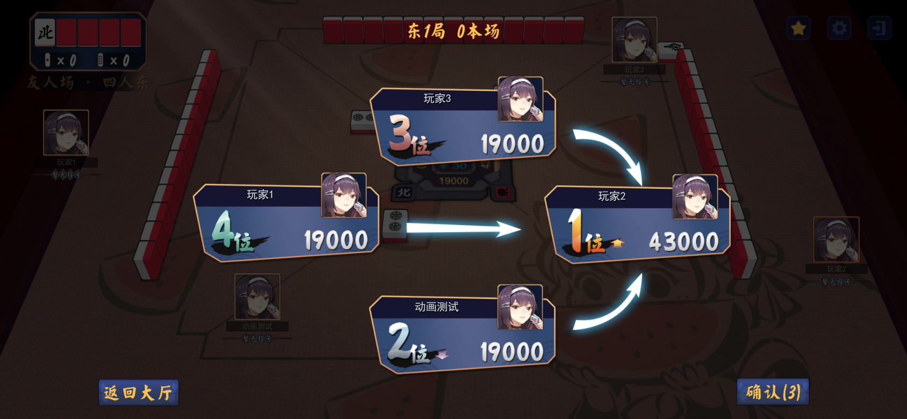
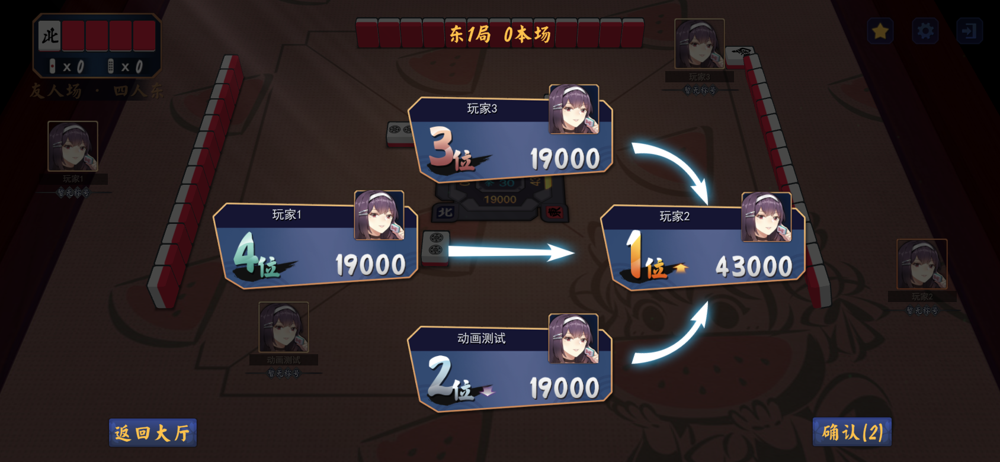
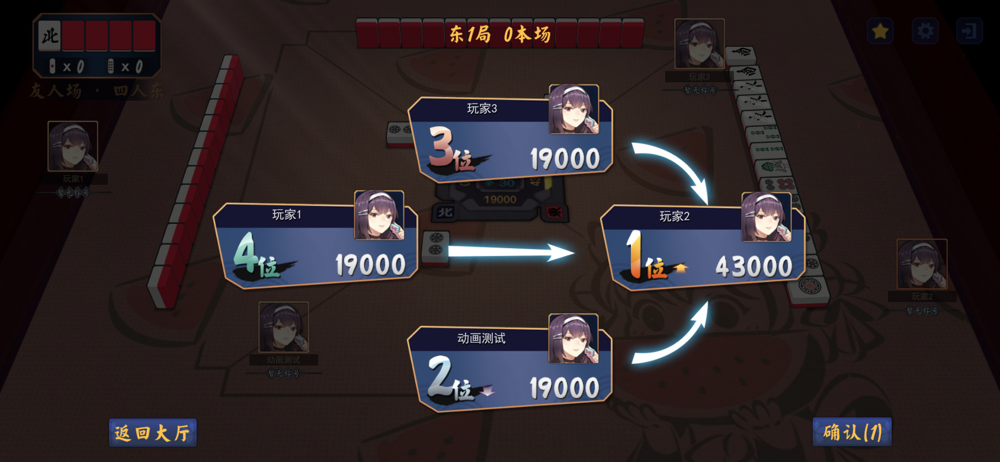

Unity 0.5.43 · 自摸与确认倒计时
电脑行动等待调整为随机 700–1000ms。在线托管玩家完成演出后再确认结算；换局清空上一局事件、动画、语音和音效。
以下为实际 Unity 客户端连接隔离本地房主服务的录制。预置临近和牌／流局的演示牌面，之后由实际 AI、轮询、演出与确认流程推进；没有通过预览脚本点击跳过或冻结演出时钟。主视角为托管玩家，其他座位为电脑。0.5.43 发布复核：自摸牌在预留牌位垂直起落；分数与名次演出结束后，暗色“确认(3)”倒计时到 0 自动确认；终局仍为 9 秒。规则测试与 Unity 专项回归记录随安装包提供，尚未真机验证。视频无声，未验证手机音频体验。
四人 · 一炮双响
两位和牌者依次提示与切入 → 共用点炮牌特效完整播放 → 第一位役种 → 第二位役种 → 分数结算 → 下一局。
实际速度 · 无声 · 33.3 秒
三人 · 自摸
自摸提示、切入与手部动作完整结束，再展示役种与分数，托管自动确认后发下一局。
实际速度 · 无声 · 27.5 秒
四人 · 终局倒计时
和牌与分数结算结束后进入终局，保留“下一局(9)”至 0 的倒计时，再开始下一场。
实际速度 · 无声 · 38.5 秒
四人 · 流局
先展示流局信息与听牌摊牌，再结算分数，完成后自动进入下一局。
实际速度 · 无声 · 19.2 秒
双响关键帧

最后一位切入后，点炮牌特效完整播放

特效完成后展示第一位役种

依次展示第二位役种

新局已开始，旧和牌提示与特效已清空
客户端演出时间记录 · 服务端结算确认记录 · 修改说明
模型交接与暗色确认按钮专项截图
以下为真实 Unity 渲染的合成验证牌面，倒计时时钟冻结用于核对按钮文字；上方流程视频使用正常运行时钟。

自摸动作末段：牌位与尺寸保持一致
交接后：只显示桌面牌
确认(3)
确认(2)
确认(1)984 项专项断言